Tired of re-thatching? We convert old thatch lapas to Harvey thatch tiles, repair and re-thatch thatch roofs, and build new lapas and pools. Free quotes.
From a leaking lapa to a whole new one, done by one team.
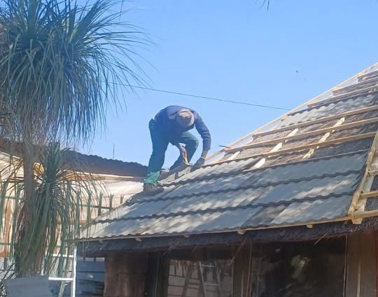
We convert old thatch lapas and roofs to Harvey thatch tiles: the thatch look, without the re-thatching.
See details →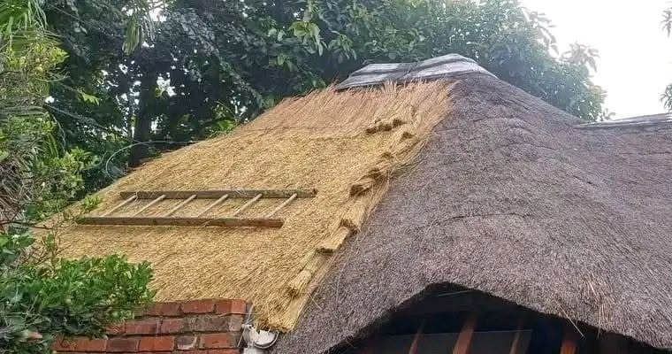
Leaking thatch repaired, old lapas brushed and re-thatched, new thatch roofs. We also sell and deliver thatch grass.
See details →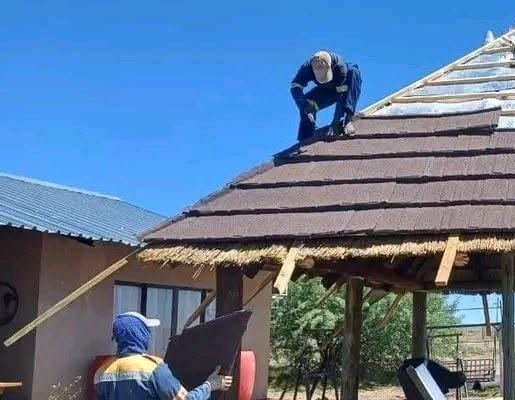
New lapas built from scratch: poles, roof structure, thatch or Harvey thatch tiles, and wooden decks.
See details →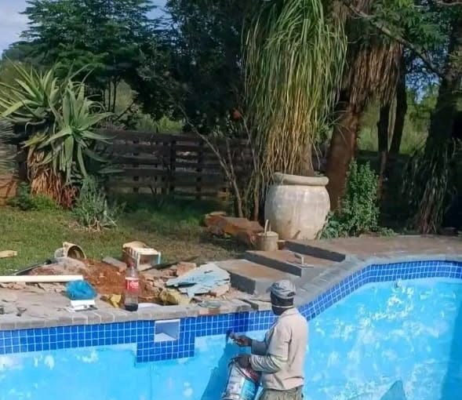
New concrete, marbelite and fibreglass pools. Leaking pools repaired, old pools re-marbelited and fibreglass repainted.
See details →WhatsApp a photo of your lapa and your area. George will come and quote for free.
The same lapa, a few days apart. Real photos from our own job.
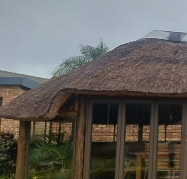
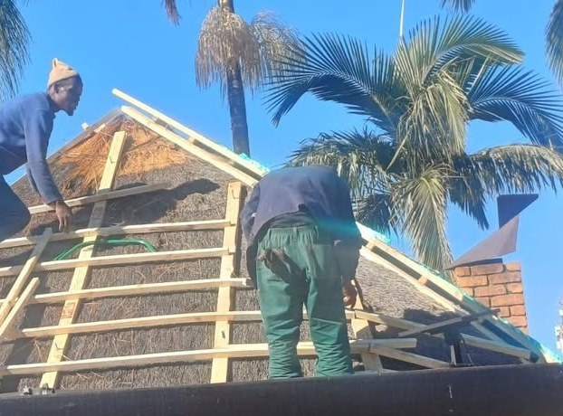
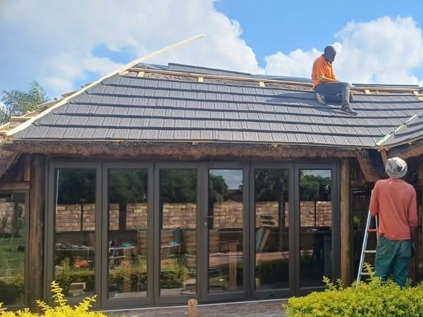
Maganela Construction builds and looks after lapas and thatch roofs in Pretoria. We thatch, re-thatch and repair, and when a thatch roof has had its day, we convert it to Harvey thatch tiles. We also build and renovate swimming pools. George and the team do the work themselves.
Harvey tile conversions, thatch repairs, new lapas and pools.
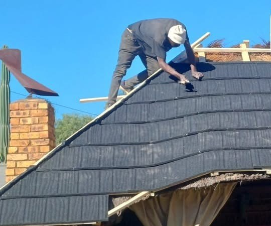
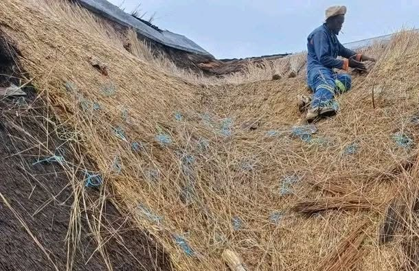
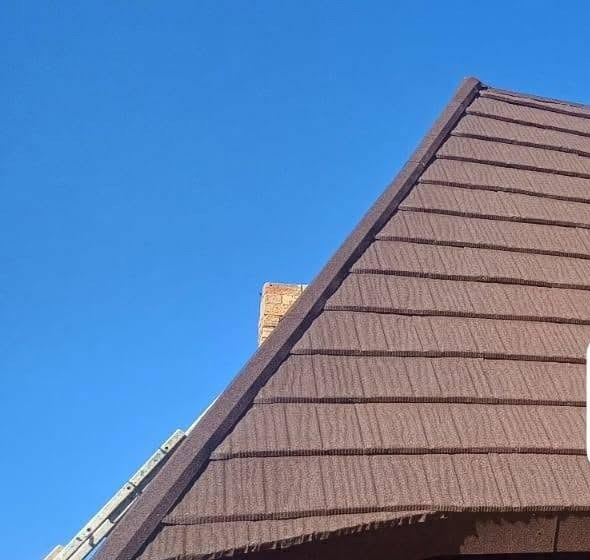
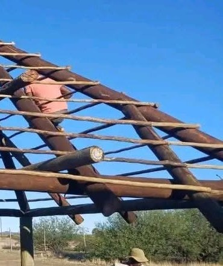
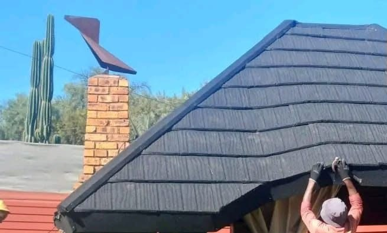
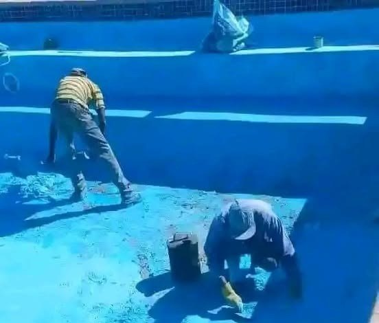
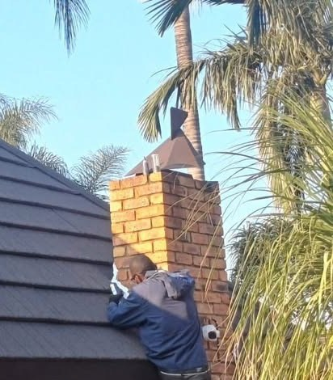
Once your Google Business Profile is live, your customer reviews show up in this section, along with a "Leave us a review" button. (This box is only here in the preview.)
We work across Pretoria and the areas around it. [George to confirm where he is based and the areas he travels to.]
Check if we cover youIt depends on the size and shape of the lapa. [George to confirm a typical price.] WhatsApp a photo and the size for a free quote.
Pretoria and the areas around it. [George to confirm areas and how far you travel.]
Yes. We repair leaking thatch, brush old lapas, re-thatch and build new thatch roofs. We also sell and deliver thatch grass.
Yes. New concrete, marbelite and fibreglass pools from R55,000 for 5×4m, plus leak repairs, re-marbelite and fibreglass repainting.
WhatsApp a photo of your lapa or pool and your area to 082 471 9575, or call George on 082 288 2861.
Call or WhatsApp 082 471 9575 for a free quote.